Каталог
Строительная химия
и промышленные полы МОНОХИМ
Полная номенклатура материалов для гидроизоляции, ремонта и защиты бетона, устройства промышленных полов. Выберите категорию или скачайте каталог.
Каталог строительной химии
 Гидроизоляционные материалыЦементно-полимерные составы, ленты и шнуры для гидроизоляции фундаментов, кровель, чаш, резервуаров и швов.
Гидроизоляционные материалыЦементно-полимерные составы, ленты и шнуры для гидроизоляции фундаментов, кровель, чаш, резервуаров и швов.
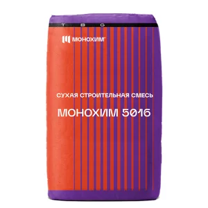
Самовыравнивающиеся смеси и составыНаливные быстротвердеющие смеси для устройства ровных прочных оснований пола. Ремонтные смеси и составы для бетонаСоставы для ремонта, восстановления и защиты бетонных конструкций и оснований.
Ремонтные смеси и составы для бетонаСоставы для ремонта, восстановления и защиты бетонных конструкций и оснований.
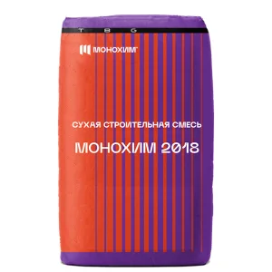
Торкрет материалыСухие смеси для торкретирования и набрызга бетона на конструкции и поверхности. Клеевые составы и грунтовкиКлеи для плитки, керамогранита, ПВХ и гидроизоляционных лент, грунтовки глубокого проникновения.
Клеевые составы и грунтовкиКлеи для плитки, керамогранита, ПВХ и гидроизоляционных лент, грунтовки глубокого проникновения.
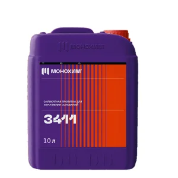
Окрасочные защитные составыЗащитные краски и покрытия по бетону, металлу и конструкциям.Монопол: промышленные полы и системы
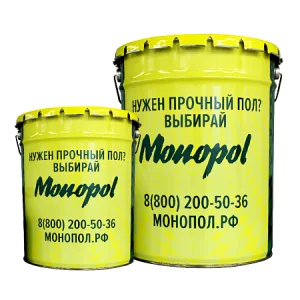
Эпоксидный наливной полПрочные химстойкие эпоксидные покрытия для промышленных и складских полов.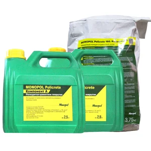
Полиуретанцементный полУдаро- и термостойкие полы для пищевых, химических и производственных цехов.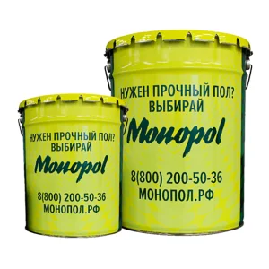
Полиуретановый полЭластичные износостойкие полиуретановые покрытия пола.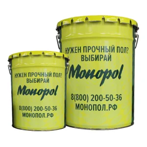
Краски и лаки для бетонного полаОкрасочные и лаковые составы для защиты и обеспыливания бетонных полов.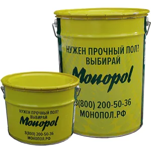
Антистатический полТокопроводящие антистатические покрытия для помещений с электроникой.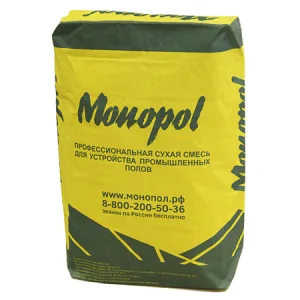
Полимерцементный наливной полПолимерцементные наливные покрытия для оснований под нагрузку.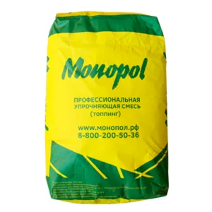
Топпинговый полУпрочнение бетонного пола сухими кварцевыми и корундовыми топпингами.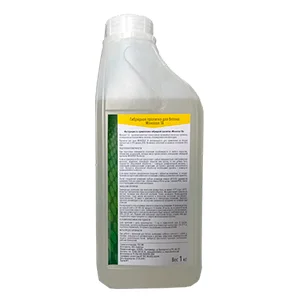
Пропитки для бетонаСилеры-кюринги, обеспыливающие и упрочняющие пропитки для бетона.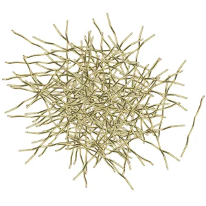
Фибра для бетона и стяжкиПолимерная, полипропиленовая и стальная фибра для армирования бетона и стяжек.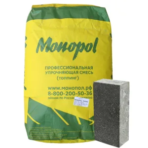
Безыскровый полБезыскровые покрытия для взрывопожароопасных помещений.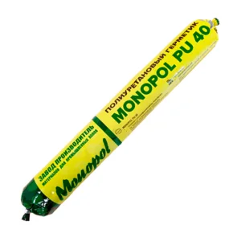
Герметики полиуретановые и химические анкерыПолиуретановые герметики швов и химические анкеры для крепежа.Профессиональные ремонтные смеси для бетонаСоставы для профессионального ремонта и восстановления бетона.
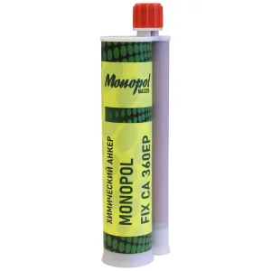
Подливочные и анкеровочные составыБезусадочные подливочные и анкеровочные смеси для оборудования и опор.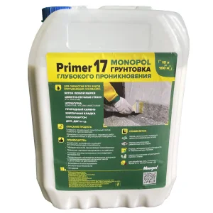
Грунтовки глубокого проникновенияУкрепляющие грунтовки для подготовки оснований под покрытия.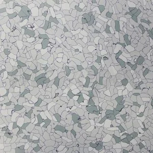
Антистатическая токопроводящая ПВХ-плиткаМодульная токопроводящая ПВХ-плитка для спецпомещений.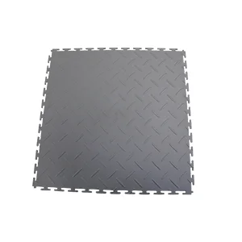
Модульные ПВХ покрытияБыстромонтируемые модульные ПВХ покрытия для промышленных полов.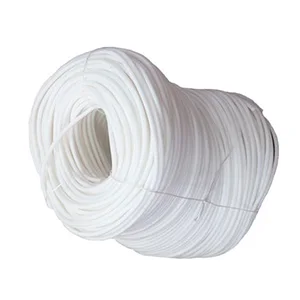
Сопутствующие товарыИнструмент, материалы и комплектующие для устройства полов и покрытий.